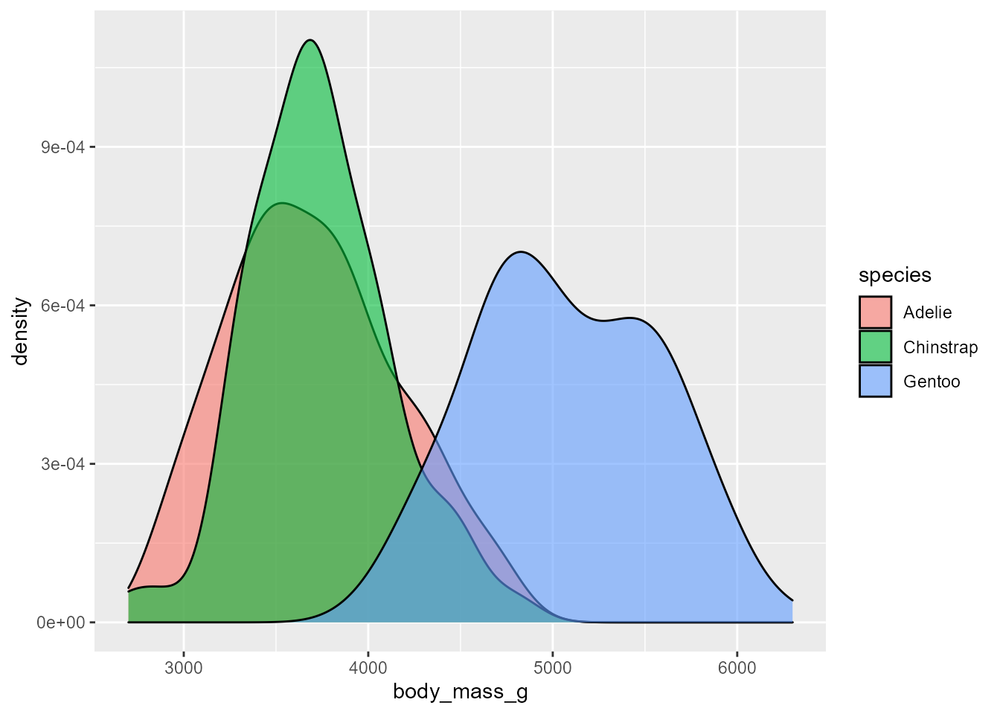
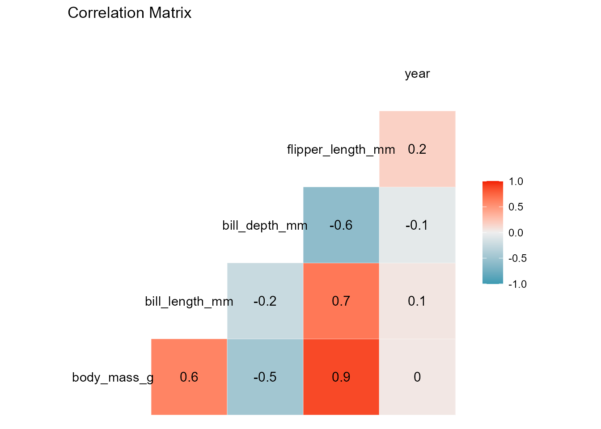
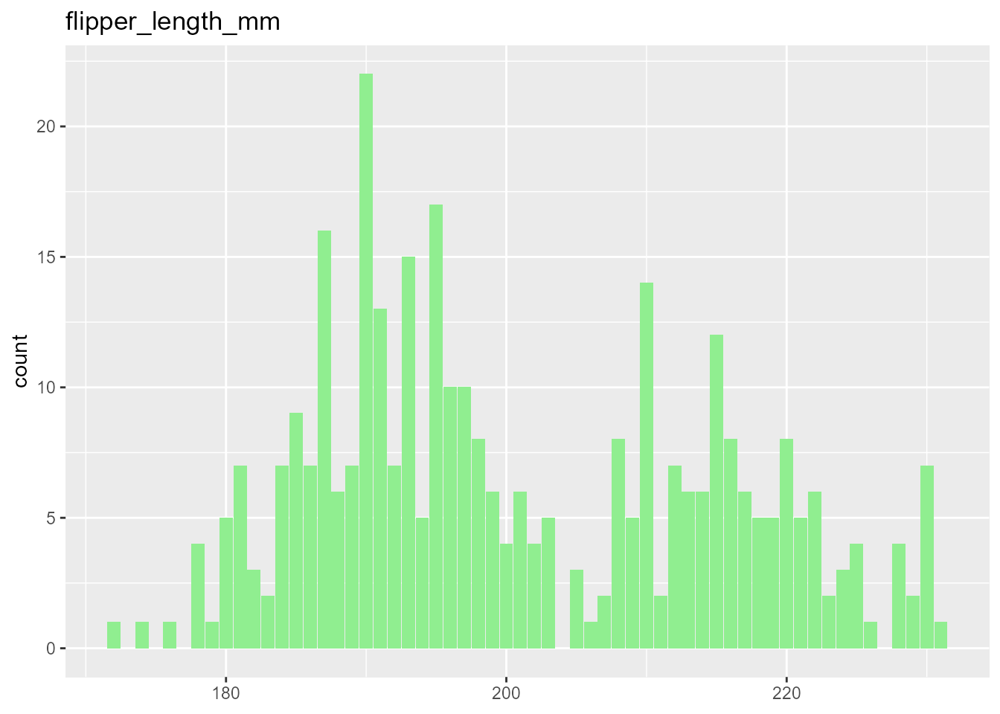
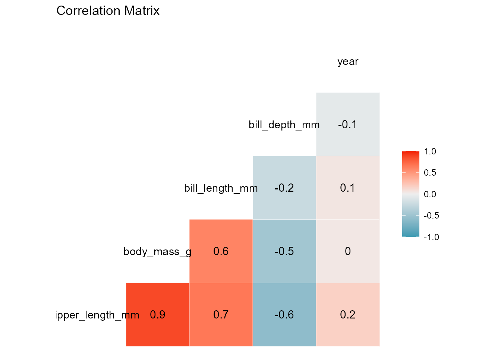

my-vignette.RmdA model´s purpose and potential usage is the crucial decision that determines the characteristics the model will have. For instance, a machine learning model focused on prediction is optimized to maximize a score metric and be deployed on unseen data, hence it is more complex. Meanwhile, a statistical analysis model centered on answering inferential questions is characterized by its simple manipulation and interpretability. A clear example of this phenomenon is that Scikit-Learn weights the feature coefficients based on their association with one another instead of informing if a feature interaction is significant or influential over the response. That being said, Python´s Scikit-Learn module is currently the most known and used package for machine learning and feature selection. Thus, a considerable amount of users are accustomed to its coding syntax and model formulation.
For these same users to apply statistical analysis and regression models in R, they require to learn a completely different programming language to create both significant plots and EDA analysis using GGPlot2 and regression models, primarily focused on inference and causal outcomes. Taking this into consideration, this package´s objective is to bridge the gap R programming language and python users. We attempted to do this by providing a function to perform both exploratory data analysis and three environment-class instances very similar to the python interface to use regression models for inference purposes.
The aRidanalysis package is not currently available on CRAN, hence, the install.packages() function will not work. Nonetheless, for installation and usage, use the devtools package.
#install.packages("devtools")
#devtools::install_github("UBC-MDS/aridanalysis")A function that uses ggplot2 to provide two informative plots summarizing the general trends of the data presented. It requires the specification of a data frame, the response and its type (either numerical or categorical) and a list of the supported explanatory variables. For its application, the user does not require any prior knowledge on ggplot2, making it very welcoming for new R users and useful for anyone that requires a quick and concise visualization of the data before a proper statistical analysis.
Here is an instance of the function’s output using the penguin’s dataset. For a categorical response, the function returns a KDE of the response’s different levels and a correlation matrix of the data features, useful for obtaining a general idea of which variables have an influential association with the response and identifying any possible multicollinearity tendencies. On the other hand, when the response is numeric and continuous, the density plot is replaced by a histogram of its general behavior.
head(palmerpenguins::penguins)
#> # A tibble: 6 x 8
#> species island bill_length_mm bill_depth_mm flipper_length_~ body_mass_g sex
#> <fct> <fct> <dbl> <dbl> <int> <int> <fct>
#> 1 Adelie Torge~ 39.1 18.7 181 3750 male
#> 2 Adelie Torge~ 39.5 17.4 186 3800 fema~
#> 3 Adelie Torge~ 40.3 18 195 3250 fema~
#> 4 Adelie Torge~ NA NA NA NA <NA>
#> 5 Adelie Torge~ 36.7 19.3 193 3450 fema~
#> 6 Adelie Torge~ 39.3 20.6 190 3650 male
#> # ... with 1 more variable: year <int>
arid_eda(palmerpenguins::penguins, 'species', 'categorical', c('body_mass_g'))
#> Registered S3 method overwritten by 'GGally':
#> method from
#> +.gg ggplot2
#> [[1]]
#>
#> [[2]]
arid_eda(palmerpenguins::penguins, 'body_mass_g', 'numeric', c('flipper_length_mm'))
#> Warning: Ignoring unknown parameters: binwidth, bins, pad
#> [[1]]
#>
#> [[2]]
A function that creates a class object model using an linear regression mimicking Scikit Learn’s interface and functionality. The function’s output is an object of type arid_linreg with three methods (fit, predict and score) and two attributes for statistical analysis and interpretation, the coefficients and the intercept. All the object-oriented functionalities can be retrieved using the $ sign.
As for inputs, only the data frame of the explanatory variables and the response are required in their known X and y representation. Nonetheless, if a similar model oriented towards prediction was previously trained and tuned using the same data, a known regularization method (either Ridge, Lasso or Elasticnet) along with its strength penalization parameter can be applied. The function is tested on the mtcars dataset, using hp as the continuous response variable.
data(mtcars)
head(mtcars, 6)
#> mpg cyl disp hp drat wt qsec vs am gear carb
#> Mazda RX4 21.0 6 160 110 3.90 2.620 16.46 0 1 4 4
#> Mazda RX4 Wag 21.0 6 160 110 3.90 2.875 17.02 0 1 4 4
#> Datsun 710 22.8 4 108 93 3.85 2.320 18.61 1 1 4 1
#> Hornet 4 Drive 21.4 6 258 110 3.08 3.215 19.44 1 0 3 1
#> Hornet Sportabout 18.7 8 360 175 3.15 3.440 17.02 0 0 3 2
#> Valiant 18.1 6 225 105 2.76 3.460 20.22 1 0 3 1
model <- arid_linreg()
model <- model$fit(as.matrix(subset(mtcars, select=mpg:disp)), as.matrix(mtcars['hp']))
model$intercept_
#> [1] 48.96239
model$coef_
#> [1] -2.34912303 20.79486559 0.07044078
model$predict(matrix(c(20, 5, 180), nrow=1, ncol=3))
#> 1
#> [1,] 118.6336
model$score()
#> [1] 0.7119073Similar to the linear regression case explained above, this function creates a class object model of logistic regression which mimics Scikit Learn’s interface and functionality. Both binomial and multinomial models are supported. The function’s output is an object of type arid_logreg with three methods (fit, predict and score) and two attributes for statistical analysis and interpretation, the coefficients and the intercept. All the object-oriented functionalities can be retrieved using the $ sign.
As for inputs, only the data frame of the explanatory variables and the response are required in their known X and y representation. Nonetheless, if a similar model oriented towards prediction was previously trained and tuned using the same data, a known regularization method (either Ridge, Lasso or Elasticnet) along with its strength penalization parameter can be applied. Below, the function is tested on the penguin’s dataset, using sex as the binary response variable for logistic regression.
x <- palmerpenguins::penguins %>%
tidyr::drop_na() %>%
dplyr::select(body_mass_g, flipper_length_mm, bill_depth_mm) %>%
dplyr::slice(1:50) %>%
as.matrix()
y <- palmerpenguins::penguins %>%
tidyr::drop_na() %>%
dplyr::select(sex) %>%
dplyr::slice(1:50)
levels(y$sex) <- c(1,0)
y$sex <- as.numeric(as.character(y$sex))
y <- unlist(y)
model <- arid_logreg(x, y)
print(model$coef_)
#> [1] -0.009581934 0.155920972 -1.534432569
print(model$intercept_)
#> [1] 34.68394Like its two previous counterparts, the arid_countreg() function creates a class object model of linear regression for counting data (response is restricted to be a positive integer) and mimics Scikit Learn’s interface and functionality. As a default, the function applied Poisson Regression. However, if overdispersion tendencies are detected via the AER package, the negative binomial distribution will be used instead. The function’s output is an object of type arid_countreg with three methods (fit, predict_count and score) and four attributes for statistical analysis and interpretation, the model itself, the coefficients, the intercept and the pvalues of each explanatory variable. All the object-oriented functionalities can be retrieved using the $ sign.
The explanatory variables’ data frame and the response are required in their known X and y representation as inputs. Other crucial inputs are whether the model should consider or not the interaction terms, the significance level, whether the model should consider the intercept and a verbose statement that informs the significant variables in the model. The function is tested on the warpbreaks dataset, using breaks as a response.
data(warpbreaks)
X <- warpbreaks %>%
dplyr::select(wool, tension)
y <- warpbreaks$breaks
y <- as.integer(y)
head(warpbreaks)
#> breaks wool tension
#> 1 26 A L
#> 2 30 A L
#> 3 54 A L
#> 4 25 A L
#> 5 70 A L
#> 6 52 A L
fit_model <- arid_countreg(X, y, alpha=0.05, model="additive")
fit_model$coef_
#> [1] 0.8300984 0.7413909 0.5996582
fit_model$intercept_
#> [1] 39.3838
fit_model$p_values_
#> [1] 6.512797e-02 1.396538e-02 3.583277e-05
fit_model$score(fit_model$count_model_)
#> # A tibble: 2 x 2
#> In_Sample_Metric Value
#> <chr> <dbl>
#> 1 AIC 409.
#> 2 Deviance 53.7